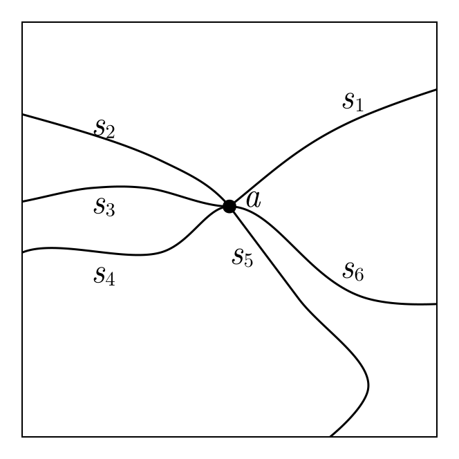
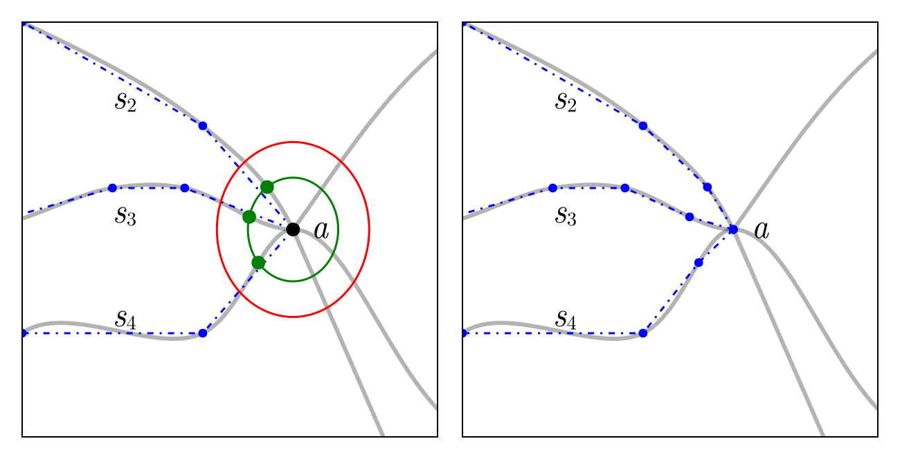

Triangulating Curve-Bounded Domains
In this section, we discuss the mathematical details behind the triangulation of curve-bounded domains. The algorithm we implement for this is from the PhD thesis Delaunay Refinement Mesh Generation of Curve-bounded Domains by Serge Gosselin (2009). A basic description of the algorithm is as follows:
Boundary Enrichment
The first step of the algorithm is to obtain a piecewise linear approximation to the domain so that we obtain an initial triangulation. This approximation must have no intersecting edges so that we can compute a triangulation of the approximate domain. For this approximtaion, we need to also be careful about the resolution of the approximation: Too many points will greatly increase the number of triangles in the final mesh, but too few points could result in a poor approximation and cause difficulty when triangulating with overlapping curves.
The approach we take for obtaining this approximation is based on the total variation of the curve, as defined in the last section. Recall that this total variation helps describe how much a curve varies around an interval, and so we can use the total variation to determine how many points are needed to approximate the curve by straight edges. Using the total variation as a guide so that any subcurve has total variation less than $\pi/2$, we will be able to enrich the boundary, adding points until no edges contain any other boundary points inside their diametral circles. With this requirement, all boundary edges will satisfy the constrained Delaunay property, allowing us to obtain an initial triangulation.
One difficulty with this approach is that finding all vertices inside a given edge's diametral circle is no longer as easy a task as it is for a triangulation, since we do not have any triangulation data structure to work with during this enrichment phase. To overcome this, we instead use an R-Tree $\tau$. This is a spatial indexing tree that will allow us to efficiently compute intersections. Once we have found such a vertex $v$ inside an edge $e$'s diametral circle, we need to check if it is actually visible from $e$. Visibility will be blocked if there is a hole between $v$ and $e$, or there are other segments between $v$ and $e$ such that a segment from any point $e$ to the vertex would intersect with another segment.
Testing Visibility
Let us consider the problem of testing visibility between a vertex $v$ and an edge $e$. One approach would be to take a small subset of points on the edge and simply test whether the line segment from $v$ to each of these points intersects with any other segment, using the tree $\tau$ to compute these intersections. This would not be efficient, though, and might still miss eom intersections. Instead, it is actually sufficient to test visibility just from the endpoints of $e$. To understand why, suppose that $v$ is not visible from $e$'s endpoints but is visible from a point in $e$'s interior. This would imply that there are other vertices located inside $e$'s diametral circle. Since we split all edges that contain other vertices inside their diametral circles, these subcurves would eventually be split anyway, which is the same outcome as if we had currently declared $v$ as visible to begin with. Thus, for testing visibility we simply check the endpoints.
The actual algorithm we use for testing this visibility is as follows, assuming that we have a point $p_k$ inside an edge $e_{ij}$'s diametral circle:
- First, we check if there is a hole between $p_k$ and $e_{ij}$ that would occlude visibility. To check this, let $C$ be the curve associated with $e_{ij}$, and compute the certificates $s_c$ and $s_e$ that give the positions of $p_k$ relative to $C$ and $e_{ij}$, respectively. If $p_k$ is directly on $e_{ij}$, then this means that an endpoint of a boundary edge is directly on $e_{ij}$, and so we declare that $p_k$ is visible from $e_{ij}$; if $s_c \neq s_e$, then $e_{ij}$ intersects another boundary edge with $p_k$ as a vertex and so we declare that $p_k$ is visible from $e_{ij}$; if $p_k$ is right of $C$, then this means that $c$ bounds a hole and so we declare that $p_k$ is not visible from $e_{ij}$. Otherwise, we proceed onto the next step.
- We now need to determine if $p_k$ is visible from either of the endpoints of $e_{ij}$. We initialise the variables
int1 = falseandint2 = false. To efficiently compute the intersections, we compute the intersection of the bounding box $B$ of $T_{ijk}$ with the bounding boxes in the R-Tree $\tau$ (described in the algorithm for boundary enrichment later). Then, for each edge $e_{uv}$ disjoint from $e_{ij}$ in the set of intersections, we setint1 = trueif $e_{uv}$ insteads $e_{ik}$ andint2 = trueif $e_{uv}$ intersects $e_{jk}$. If everint1andint2are both true, then we declare that $p_k$ is not visible from $e_{ij}$. Otherwise, if after processing all intersections eitherint1orint2is false, then we declare that $p_k$ is visible from $e_{ij}$.
Splitting a Subcurve
Once we have determined that an edge $e_{ij}$ needs to be split, we need to determine where to place the split point. This point cannot just be, for example, $(p_i + p_j) / 2$, since that might not lie on $e_{ij}$'s parent curve $C$. Instead, we use the equivariation split of the subcurve between $p_i$ and $p_j$, so that $TV(t_1, t^*) = TV(t^*, t_2) = TV(t_1, t_2) / 2$, where $t_1$ and $t_2$ are the parameters corresponding to $p_i$ and $p_j$, respectively, and $t^*$ is the parameter corresponding to the split point. This split point will be the new vertex that we add to the triangulation, provided there are no issues related to small angles like those we discuss below.
Small Angle Complexes
For discussing boundary enrichment, we also need to handle small angles between curves. We that an input angle between two curves is small if it is less than $\pi/3$. Any curves where the angle between them is small must be protected and handled appropriately during enrichment. For this, we define a small angle complex $\Sigma$ to be a set of subcurves having a common apex vertex as an endpoint and forming contiguous small angles at this apex vertex.
In the figure above, we show an example of a set of subcurves $\{s_1, s_2, s_3, s_4, s_5, s_6\}$ together with a common apex vertex. We see that the curve $s_1$ forms no small angle with any other curve, and so it is not a part of any small angle complex. The curves $\{s_2, s_3, s_4\}$ together form a small angle complex since they form a contiguous set of small angles. The curve $s_5$ is not included in this complex since the angle between $s_4$ and $s_5$ is not small. Lastly, the curves $\{s_5, s_6\}$ define a small angle complex. See that it is possible for a single apex vertex to define several separate small angle complexes.
Locally Small Angles
In addition to handling small angle complexes, we also want to handle small angles that are locally acute, meaning that the angle between two segments is small. These are local checks since the curves associated with these edges might not define actually small angle at this point. We include these checks though to ensure that the enrichment phase cannot get stuck by any missed small angles.
Splitting Subcurves Near Small Angles
Now let's discuss how we split subcurves near small angles. Let's first discuss the case where the subcurve is not part of a small angle complex. If there are no neighbouring acute angles to the edge $e_{ij}$ associated with the subcurve $s_{ij}$, letting $s_{ij}$ be the part of the parent curve $C$ between $p_i$ and $p_j$, then we just use an equivariation split. Otherwise, the split position depends on whether there are one or two neighbouring acute angles. The rule that we apply is the same as used for mesh refinement of piecewise linear bounaries as described here. The only difference is that the split position we compute is based on the intersection of the concentric circular shell with the subcurve itself instead of with $e_{ij}$.
The main difficulty to work through is the splitting of a subcurve belonging to a small angle complex. Suppose $s_{ij}$ belongs to a small angle complex $\Sigma$ comprised of subcurves $s_1, \ldots, s_m$. We define the maximum split radius $r_{\max} = 2\ell_{\min}/3$, where $\ell_{\min}$ is the length of the shortest boundary edge approximating a subcurve of $\Sigma$. The biggest power of two less than $r_{\max}$ is then chosen to be the radius of the concentric circular shell to place the new vertex onto, meaning the radius of the shell is $r_s = 2^k$ where $k = \lfloor \log_2(r_{\max}) \rfloor$. Then, for each subcurve $s_i$, we compute the intersection of this shell, centered at the apex of $\Sigma$, with $s_i$ closest to the apex and place the new vertex there. We show an example of this below, where we are considering splitting a subcurve in the complex $\Sigma$ defined by $\{s_2, s_3, s_4\}$.
In the above figure, the subcurves of interest are the subcures defined by the curves from $a$ to each of the first blue points on each curve. These blue points and lines shows the piecewise linear approximation to each subcurve. The shortest edge length is then used to compute $r_{\max}$, giving the circle shown in red. The shell with radius $2^{\lfloor \log_2 r_{\max}}\rfloor$ is shown in green. We then split each of the subcurves at their intersection with this green curve, giving the points shown in green and the updated piecewise linear approximation in the second figure. All subsequent splits of these subcurves (those between $a$ and the new split points) will be at the next smaller power of two shell, i.e. $2^{\lfloor \log_2 r_{\max} \rfloor - 1}$.
Enriching the Boundary
Now we can finally discuss the full algorithm for enriching the boundary to prepare for triangulation. We describe these steps one at a time. We assume that all the small angle complexes have already been computed. Moreover, while our discussion thus far has not included the possibility of interior segments, simple modifications to the steps below and the details above could be made to handle them. We do not discuss interior segments here.
Coarse discretisation
The first step is to obtain a coarse discretisation of the boundary. For each curve, we compute a coarse discretisation by, starting with the two endpoints, computing equivariation curves between each pair of points until the total variation across any subcurve is less than $\pi/2$. In this package, this is the default, but we also provide an option to simply add a specified number of equivariation splits rather than taking care of the total variation.
Spatial indexing
We then compute the R-Tree used for computing intersections. The R-Tree is initialised by inserting into it the axis-aligned bounding box of each segment's diametral circle in the coarse discretisation.
Queueing vertices
To determine the order in which to process vertices in the provided vertex set $\mathcal P$, we use a queue. This is a simple FIFO queue, i.e. just a vector, that we initialise with $\mathcal Q = \mathcal P$. We then process the vertices in the order they were added to the queue.
Enrichment
We are now ready to actually being enriching. The idea is to process each vertex in the queue, adding new vertices as needed, and then stop once the queue is empty. So, let us suppose that $\mathcal Q$ is not empty and dequeue a point $p_i$ from $\mathcal Q$. We then compute the intersection of $p_i$ with the R-Tree $\tau$, returning the set of all edges whose diametral circle's bounding box contains $p_i$. We then need to process each edge $e_{uv}$ in this set.
For this edge $e_{uv}$, we only need to consider processing it if $p_i$ is in its diametral circle and is visible from $p_i$. If this is not the case, we can continue onto the next edge $e_{uv}$ onto the next set or dequeue another point. Otherwise, we split the subcurve associated with $e_{uv}$ as described previously, ensuring we take care of small angles and small angle complexes. The point $p_i$ gets enqueued back into $\mathcal Q$, and when we split the subcurve we (1) delete $e_{uv}$ from $\tau$ and add back in the two new segments and (2) enqueue the newly added point into $\mathcal Q$.
The above iterative procedure continues until $\mathcal Q$ is empty. Once it is, we will have obtained a piecewise linear approximation to the boundary that satisfies the constrained Delaunay property. We can then proceed to compute the Delaunay triangulation of the boundary as usual.
Mesh Refinement
Once we have obtained the initial triangulation of the boundary, we can then refine the mesh to obtain a higher-quality mesh. The algorithm for this is reasonably straightforward. We use the existing algorithm for mesh refinement as discussed previously, but when splitting the encroached segments we use the same method for splitting a subcurve as was used during enrichment.